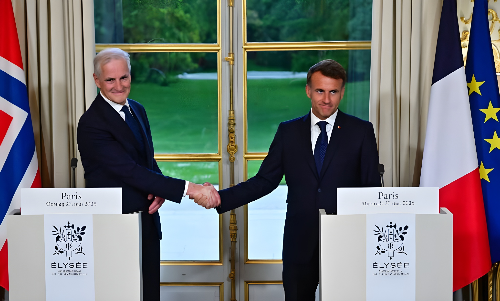

Le 27 mai 2026, à l'Élysée, la Norvège est devenue le neuvième pays à rejoindre la « dissuasion nucléaire avancée » proposée par la France à ses alliés européens. En signant l'accord de Narvik avec le président Macron, le Premier ministre Jonas Gahr Støre a franchi un seuil inédit pour un pays non membre de l'Union européenne, fondateur de l'OTAN, et riverain direct de la péninsule de Kola — le plus grand bastion nucléaire russe. Une décision lourde de sens dans un Grand Nord en pleine recomposition stratégique.
Tout commence le 2 mars 2026. Depuis la base opérationnelle de l'Île Longue, en Bretagne, devant le sous-marin nucléaire lanceur d'engins Le Téméraire, Emmanuel Macron prononce un discours historique sur la doctrine nucléaire française. Dans un contexte marqué par la persistance de la menace russe et les doutes croissants sur la fiabilité de la garantie américaine sous l'administration Trump, le président français annonce une nouvelle étape qu'il qualifie de « dissuasion avancée ».
L'idée centrale : associer les alliés européens volontaires à la réflexion stratégique et aux manœuvres des forces nucléaires françaises. Concrètement, les Forces aériennes stratégiques (FAS) équipées de Rafale à capacité nucléaire pourront se « disséminer dans la profondeur du continent européen » pour complexifier les calculs d'un adversaire potentiel. Macron annonce également l'augmentation de la taille de l'arsenal nucléaire français — rompant avec la doctrine de « stricte suffisance » maintenue depuis Charles de Gaulle — et abandonne formellement la notion de stricte suffisance au profit de « seuils strictement cohérents avec l'efficacité opérationnelle ».
Précision cruciale : la France ne partage pas la décision d'emploi. Aucun État partenaire ne dispose d'un droit de regard sur le déclenchement éventuel de la frappe nucléaire française. Paris conserve seule l'autorité sur son arsenal. Ce que propose Macron, c'est une coopération de planification, d'entraînement et de déploiement — pas une cogestion de l'arme ultime.
« Notre pays détient cette arme hors du commun qu'est l'arme nucléaire et il en fait le socle de sa sécurité. Si nous devions utiliser notre arsenal, aucun État, si puissant soit-il, ne pourrait s'y soustraire. »
— Emmanuel Macron, discours de l'Île Longue, 2 mars 2026La dénomination de l'accord n'est pas anodine. Narvik, ville du nord de la Norvège, fut le théâtre en mai 1940 de la première victoire terrestre des Alliés face à l'Allemagne nazie. Les troupes françaises, aux côtés des Norvégiens et des Britanniques, y repoussèrent momentanément les forces allemandes avant d'être rappelées en métropole pour faire face à la débâcle. En nommant cet accord « de Narvik », Paris et Oslo ancrent leur nouveau partenariat dans une mémoire commune de résistance partagée.
Signé le 27 mai 2026 à l'Élysée, le texte est paraphé par les ministres de la Défense des deux nations. Il institue une clause de défense mutuelle : les deux pays s'engagent à se porter assistance, y compris militaire, en cas d'agression. Cette clause de défense mutuelle, ainsi que la participation à la dissuasion avancée, constituent le cœur de l'accord, complété par des volets de coopération dans le domaine spatial, la protection des infrastructures sous-marines et des pipelines, et le soutien à l'Ukraine.
Oslo ne s'est pas précipité. Alors que huit pays avaient déjà rejoint l'initiative française dès le printemps 2026 — Royaume-Uni, Allemagne, Pologne, Pays-Bas, Suède, Danemark, Belgique, Grèce —, la Norvège a pris le temps de « se couvrir », selon l'expression employée par son Premier ministre. Jonas Gahr Støre a présenté l'accord de Narvik comme le troisième volet d'une stratégie bilatérale construite méthodiquement avec les puissances militaires européennes majeures.
Cette prudence s'explique par des contraintes constitutionnelles et politiques internes. Oslo maintient depuis des décennies une politique stricte : aucune arme nucléaire sur le territoire norvégien en temps de paix. Cette ligne rouge n'est pas franchie par l'accord de Narvik. Le Premier ministre Støre l'a clairement rappelé lors de la conférence de presse à l'Élysée, et Macron a confirmé qu'il n'y aurait pas de stationnement permanent d'armes nucléaires chez les partenaires.
Si la Norvège occupe une place singulière dans ce dispositif, c'est d'abord pour une raison géographique brutale : elle partage 219 kilomètres de frontière terrestre avec la Russie, et la péninsule de Kola — qui borde ses eaux — concentre le plus grand arsenal nucléaire au monde, avec la flotte de sous-marins nucléaires stratégiques de la Marine russe. Pour Oslo, la menace n'est pas théorique : les sous-marins russes opèrent dans ces mers en permanence, et la guerre hybride s'y manifeste déjà par des perturbations GPS, des survols intempestifs et des incidents liés à des drones.
Le ministre de la Défense norvégien Tore Sandvik, tout en précisant ne pas anticiper de conflit immédiat dans le Grand Nord, a jugé les capacités russes suffisamment menaçantes pour justifier un renforcement des liens avec les alliés européens les plus présents en mer du Nord et en Atlantique. La France, après le Royaume-Uni, est la puissance alliée qui navigue le plus régulièrement dans ces eaux septentrionales — un atout concret dans la coopération.
Pendant des décennies, la Norvège a fondé sa sécurité nucléaire sur la dissuasion élargie américaine. Les États-Unis stationnent des armes nucléaires dans plusieurs pays de l'OTAN — Allemagne, Belgique, Pays-Bas, Italie, Turquie — dans le cadre du partage nucléaire de l'Alliance. L'élection de Donald Trump et ses déclarations répétées sur la défense conditionnelle des alliés OTAN — allant jusqu'à suggérer que les pays ne payant pas suffisamment ne seraient pas défendus — ont profondément ébranlé cette certitude.
L'étape norvégienne s'inscrit dans un mouvement plus large : plusieurs capitales européennes ne considèrent plus la garantie américaine comme inconditionnelle. En rejoignant l'initiative française, Oslo diversifie son architecture de sécurité sans pour autant rompre avec Washington — les États-Unis restant, selon Støre, l'allié le plus important de la Norvège. Il s'agit d'une couverture supplémentaire, pas d'un remplacement.
« Nous traversons la situation de sécurité la plus grave depuis la Seconde Guerre mondiale. »
— Jonas Gahr Støre, Premier ministre norvégien, Élysée, 27 mai 2026Avec la Norvège, neuf pays participent désormais à l'initiative française de dissuasion avancée. Le Royaume-Uni, puissance nucléaire elle-même, y joue un rôle particulier, formalisé dès la Déclaration de Northwood en juillet 2025, lors de laquelle des observateurs britanniques ont participé pour la première fois à l'exercice Poker des forces aériennes stratégiques françaises. L'Allemagne, la Pologne, les Pays-Bas, la Belgique, le Danemark, la Suède et la Grèce ont suivi au fil des mois.
La présence de la Suède et de la Norvège donne à cette architecture une dimension arctique inédite. Avec l'adhésion récente de Stockholm et Helsinki à l'OTAN, l'ensemble de la Scandinavie se retrouve désormais intégré à des dispositifs de défense collective européens renforcés, formant un continuum stratégique du Baltique au Grand Nord qui modifie structurellement la géographie de la sécurité européenne.
Déclaration de Northwood franco-britannique : observateurs britanniques invités à l'exercice nucléaire Poker. Première ouverture concrète de la dissuasion française à un partenaire.
Discours de Macron à l'Île Longue : annonce de la dissuasion avancée, augmentation de l'arsenal français, invitation aux alliés européens volontaires.
Adhésion progressive de huit pays : Royaume-Uni, Allemagne, Pologne, Pays-Bas, Suède, Danemark, Belgique, Grèce.
Signature de l'accord de Narvik à l'Élysée. La Norvège devient le 9e pays de la dissuasion avancée. Clause de défense mutuelle avec la France.
Seul État membre de l'Union européenne à disposer de l'arme nucléaire, la France s'est longtemps gardée de toute solidarité nucléaire explicite avec ses partenaires, au nom de l'autonomie souveraine de sa décision. Le discours de l'Île Longue marque une rupture : sans partager la décision ultime, Paris accepte d'intégrer sa posture nucléaire dans une architecture collective européenne. Neuf pays couverts, une doctrine renouvelée, un arsenal en croissance — la France s'affirme comme le pilier militaire d'une Europe qui cherche à exister stratégiquement par elle-même. L'accord de Narvik, en ancrant la Norvège dans cette dynamique, étend cette architecture jusqu'aux portes de la Russie.